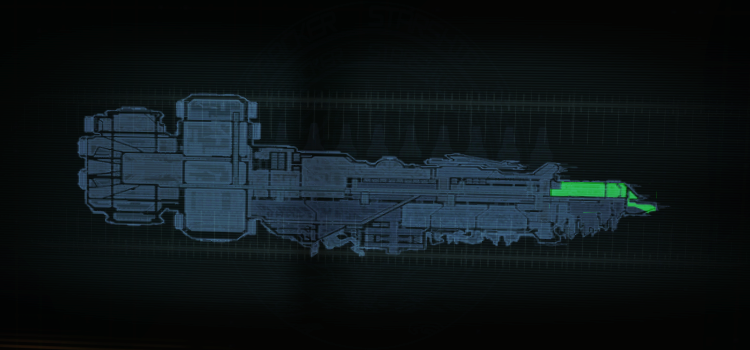
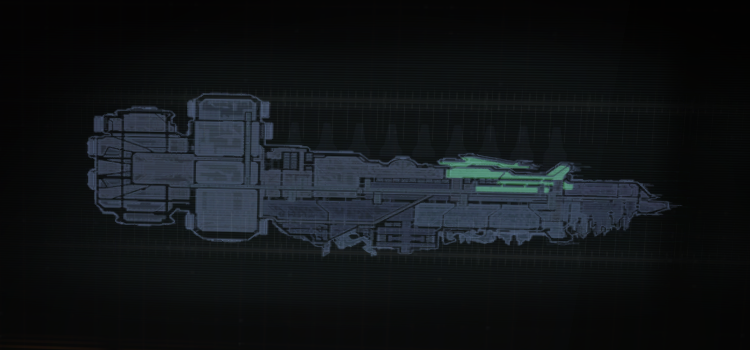
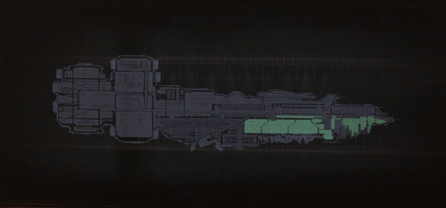
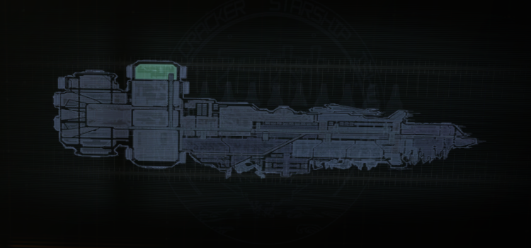
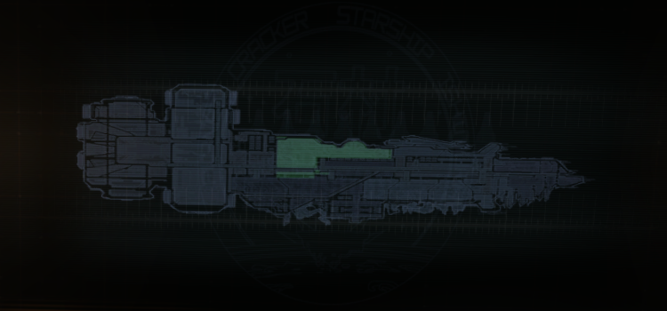
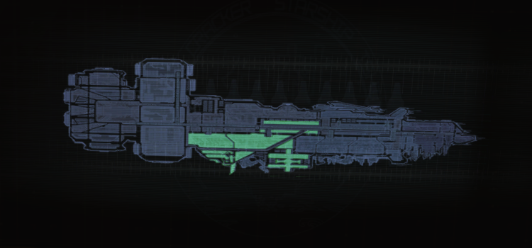
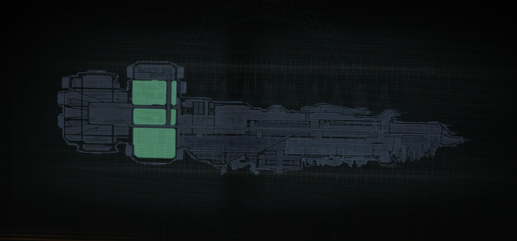
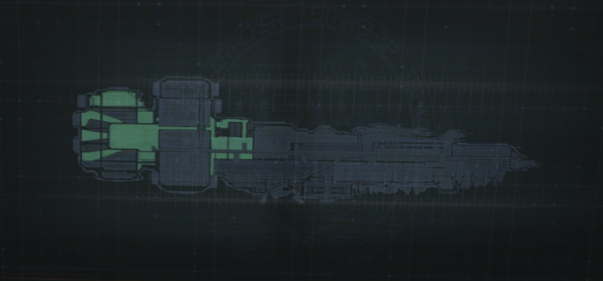

Проект
USG «Ишимура» (англ. USG Ishimura), (яп. 石村) — это флагман корпорации Concordance Extraction Corporation и первый корабль класса «Планетарный потрошитель». Помимо этого "Ишимура" стал[Комм 1] первым звездолетом своих размеров, оснащенный шоковым двигателем, использующийся для торговли и экспедиций в дальний космос. Корабль назван в честь астрофизика и изобретателя шокового двигателя Хидеки Ишимуры.
Корабль является основным местом действия игр Dead Space и Dead Space: Extraction, одноименных комиксов и фильма Dead Space: Downfall. Помимо этого «Ишимура» появляется в комиксе Dead Space: Salvage и игре Dead Space 2. Замысловатый внешний вид и зловещий антураж, выполненные в стиле техноготики, сделали её одним из символов франшизы.
Корабль USG «Ишимура» был построен в 2446 году, и сразу был провозглашён как спаситель Земли и колоний, как символ развития человечества. По первоначальному плану этот корабль должен был при помощи гравитационных захватов ловить и притягивать астероиды, после чего команда шахтеров перерабатывала бы пойманное небесное тело в полезные ресурсы, но в дальнейшем технология гравитационных захватов была расширена, чтобы при содействии аналогичных конструкций на поверхности планет, вырывать огромные фрагменты коры для дальнейшей переработки[1]. Несмотря на то, что корабль был создан в первую очередь для горнодобывающей промышленности, на нем также присутствует полностью функциональное медицинское крыло, где проводились обширные исследования генетики, вирусологии и токсикологии.
Конструкция
Мостик
Из капитанского мостика офицеры во главе с капитаном ведут управление «Ишимурой» и ведут наблюдение за его системами. Сам Мостик состоит из трех основных секций. Атриум - основной зал управления, где располагается основной офицерский состав корабля. Под Атриумом располагается капитанская рубка — персональная зона обзора для командующего офицера. В центре Атриума располагается лифт, который ведет на уровень 01 и 03 (сам Атриум находится на уровне 02). На уровне 01 располагается администрация, где производится планирование и управление горнодобывающими операциями корабля, а также расположена часть серверных систем корабля. На уровне 03 располагается массив пушек противометеоритной защиты и их система управления, а также комплекс управления связью.
Медицинская палуба
Медицинская палуба — довольно обширный отсек корабля, в котором располагается полноценное больничное крыло, а также ряд лабораторий для проведения различной исследовательской деятельности. Эта палуба вытянута вдоль транспортной линии, поэтому к ней ведут целых две станции.
Всю палубу можно разделить на три крупных зоны: крыло неотложной помощи, крыло медицинской диагностики и отсек исследований. Помимо, собственно, лабораторий, по отсекам раскиданы кабинеты руководящих сотрудников палубы. До эпидемии это был один из самых светлых и, что характерно, стерильно-белых отсеков корабля, но после пришествия некроморфов медицинская палуба оказалась буквально покрыта кровью, что делает её одним из самых зловещих и жутких отсеков корабля.
Отсек экипажа
Отсек экипажа — это жилая зона корабля, которая состоит из нескольких спальных отсеков, обеденных залов, корта для зи-бола и малых кают-кампаний. Для высшего офицерского состава также были предусмотрены более комфортные каюты, выполненные в более изящном стиле. Со стороны офицерских палуб расположен один из ангаров для челнока.
Отсек гидропоники
«Ишимура» часто отправлялся в продолжительные экспедиции в дальнем космосе, и потому один из его отсеков был разработан специально для выращивания провианта, необходимого для снабжения всего экипажа, ровно как и для поддержания уровня кислорода. Это достаточно крупное помещение корабля, которое занимает две грузовые башни в кормовой части «Ишимуры», и подразделяется на три части: две многоуровневые камеры для выращивания растительности и расположенное между ними цилиндрическое помещение - Пищевое хранилище. Непосредственно перед входом в хранилище расположена система контроля за качеством воздуха, представленная в виде голографических экранов, с которых можно отслеживать уровень производства воздуха, состояние системы вентиляции и фильтрации воздуха. Помимо этого, из этого контрольного пункта также ведется управление шлюзами водоснабжения корабля.
Отсек гидропоники стал одним из наиболее критически важных мест корабля во время эпидемии некроморфов. Благодаря обилию биомассы, здесь довольно быстро распространилось Заражение, а в пищевом хранилище вырос огромный некроморф, названный выжившими Левиафаном. Некоторые люди на этой палубе преобразились в особый вид некроморфов - Хрипунов, которые начали стремительно отравлять воздух на корабле.
Палуба техобслуживания
В этой части корабля производились необходимые технические работы над челноками; тут же располагались малые ангары для рабочих челноков. Каждый из них мог быть открыт вручную в случае, если комнаты управления ими получали какой-либо урон.
Причальная палуба
В Причальной палубе располагаются обширные ангары, в которые прибывает большая часть крупных челноков. Основную часть палубы составляет огромный зал для приёма и отлёта кораблей, а также побочная инфраструктура для погрузки и разгрузки челноков. К каждому ангару примыкает несколько комнат, представляющих собой залы ожидания. Ещё одним крупным помещением на палубе является грузовой трюм, связанный с ангаром рельсовыми путями. В трюме, предположительно, хранятся предметы, не связанные непосредственно с добычей материалов (для них предусмотрен отдельный отсек для хранения руды), например, побочное и запасное оборудование.
Помимо этого, Причальная палуба находится ближе всех к пункту управления транспортной системой «Ишимуры».
Рудная платформа
Находящаяся в самом сердце «Ишимуры», Рудная платформа — центр промышленной деятельности корабля. На нём производится дробление и плавление астероидов и фрагментов планет с целью извлечь все полезные ресурсы. Вся платформа разделена на 4 уровня, в которых захваченные небесные тела проходят разные стадии обработки.
Грузовой отсек
Грузовой отсек — это набор из нескольких обширных складов, в которых хранятся добытые из небесных тел материалы. Для удобства маневрирования по залам в них отсутствует гравитация. Во время действия Dead Space этот отсек оказывается сильно поврежден из-за столкновения с судном USM «Вейлор»
Инженерная палуба
Эта палуба «Ишимуры» — место работы инженеров самых различных специальностей, чьей общей задачей является поддержание корабля в исправном состоянии. Так, именно из этой области обеспечивается корректное функционирование шокового двигателя, гравитационной центрифуги и субсветовых двигателей. Работа в этой палубе сопряжена с высоким уровнем риска и требует высокой квалификации, что накладывает определенные ограничения на круг лиц, которые могут посещать этот отсек корабля. В отличии от прочих отсеков «Ишимуры», Инженерная палуба имеет ярко выраженный индустриальный вид, и даже не освещается полностью. На самой палубе можно выделить три отдельных отсека. Гравитационная центрифуга - большой зал круглой формы, в которой располагается устройство, которое создает гравитацию на самом корабле и обеспечивает работу гравитационных якорей планетарного потрошителя. Топливное хранилище - огромный отсек, для пересечения которого используется небольшая вагонетка, в которой располагается кольцо топливных элементов, снабжающих двигатели энергией. Машинное отделение - основная точка управления и слежения за двигателями корабля.
Прочие секции и системы
Помимо основных палуб можно также выделить несколько малых секций. Некоторые из них пронизывают весь корабль, а местоположение иных не было зафиксировано в ходе сюжета.
Транспортная линия
Ввиду колоссальных размеров корабля, различные палубы связаны между собой одноколейной транспортной линией. Специальный поезд из пары вагонов позволяет с большой скоростью попасть в любой отсек.
Сеть орудий метеоритной защиты
По поверхности всего корабля раскидано несколько орудийных расчетов для уничтожения метеоритов, которые могут прилететь из космоса или возникнуть в результате потрошения планеты. По умолчанию эта система работает в автоматическом режиме, однако как минимум у некоторых из них предусмотрено ручное управление.
Компьютерное ядро
Компьютерное ядро - центральный комплекс по обработке и хранению всей информации, поступающей с корабля. Этот отсек довольно хорошо изолирован от окружающей среды, благодаря чему Кендра Дениэлс успешно пережила там большую часть времени нахождения на корабле.
Комнаты обеззараживания
Данные комнаты можно найти в нескольких отсеках корабля. Они спроектированы, чтобы смыть с инженеров возможные патогены, а также пыль (в частности радиоактивную) до и после работы в условиях, близких к открытому космосу, например у гравитационной центрифуги.
Системы фильтрации
Система фильтрации по сути представляет собой канализацию и водоочистной комплекс корабля. Сеть из больших труб проходил под Медицинской палубой и отсеком гидропоники, однако, наверняка также пронизывает и остальные палубы корабля.
Карантинная система
Данная охранная система, присутствующая во многих отсеках корабля, призвана обнаруживать загрязняющие и биологически опасные вещества, а также изолировать помещения, где те были обнаружены.